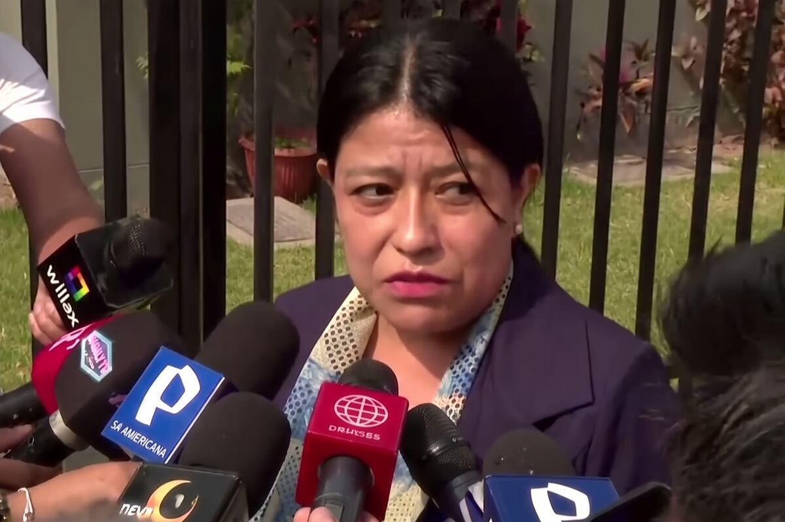

El ministro de Transportes y Comunicaciones, Rafael Rey, presentó este viernes 18 de septiembre su renuncia irrevocable al cargo, según confirmó la Presidencia del Consejo de Ministros (PCM) a través de sus canales oficiales. En una carta dirigida a la presidenta de la república, Keiko Fujimori, y al presidente del Consejo de Ministros, Luis Galarreta, Rey explicó que su decisión responde a "razones de salud que me impiden continuar ejerciendo las responsabilidades propias del cargo con la dedicación que este exige".
La noticia fue recibida con sorpresa en el ámbito político nacional, pues se trata del primer cambio en el gabinete ministerial conformado por la presidenta Fujimori, quien asumió el poder el pasado 28 de julio para el periodo 2026-2031. Rafael Rey había jurado como ministro de Transportes y Comunicaciones ese mismo día, por lo que su gestión duró menos de dos meses.
En su misiva, el ahora exministro expresó su "profundo agradecimiento a la presidenta de la república, Keiko Fujimori, y al premier Luis Galarreta, por la confianza depositada en su persona y por la oportunidad de servir al país desde esta alta responsabilidad". Asimismo, destacó el trabajo realizado junto con los servidores públicos, autoridades y equipos técnicos del ministerio. "Para mí ha sido un honor trabajar junto con ustedes", señaló.
La PCM, por su parte, emitió un comunicado en el que lamentó la decisión y agradeció la labor desempeñada por Rey durante su breve gestión. "Reconocemos y agradecemos el trabajo realizado por el ministro al servicio del país y estamos seguros de que su valioso aporte al Perú lo podrá realizar desde otros espacios", señaló la institución. El exministro también manifestó su disposición para facilitar una "transferencia ordenada y transparente de la gestión", poniendo a disposición la información necesaria para asegurar la continuidad de las políticas, proyectos y servicios a cargo del Ministerio.

La reacción de la presidenta Fujimori
Durante la sesión ordinaria del Consejo de Ministros, realizada en Palacio de Gobierno, la presidenta Keiko Fujimori expresó su agradecimiento a Rafael Rey por su labor al frente del MTC. Según informó la agencia Andina, la mandataria resaltó que durante su gestión "se destrabaron diversos proyectos y se lograron importantes avances en su sector". La reunión contó con la presencia del primer ministro Luis Galarreta y de los demás integrantes del Gabinete Ministerial.
Horas más tarde, en una ceremonia realizada también en Palacio de Gobierno, la presidenta tomó juramento a José Angello Tangherlini Casal como nuevo ministro de Transportes y Comunicaciones. Tangherlini es economista de la Universidad Nacional Mayor de San Marcos, con más de 20 años de experiencia en puestos de alta dirección, administración y gestión de instituciones públicas. Se ha desempeñado como viceministro de Desarrollo de Agricultura Familiar e Infraestructura Agraria y Riego, y ha laborado en el Organismo Supervisor de la Inversión en Infraestructura de Transporte de Uso Público (OSITRAN), en el Organismo Supervisor de Inversión Privada en Telecomunicaciones (OSIPTEL) y en el Programa de Compensaciones para la Competitividad (AGROIDEAS), entre otras entidades.
Claves de la renuncia
- Fecha: Viernes 18 de septiembre de 2026.
- Motivo: Razones de salud que impiden ejercer el cargo con la dedicación requerida.
- Sucesor: José Angello Tangherlini Casal, economista con amplia experiencia en gestión pública.
- Contexto: Primer cambio en el gabinete de Keiko Fujimori, a menos de dos meses de asumir el poder.
- Pendiente: La Nueva Carretera Central, megaobra que conectará Lima y Junín, sigue sin presupuesto para iniciar construcción en 2027.
Un sector con proyectos pendientes
La renuncia de Rafael Rey se produce en un momento crítico para el Ministerio de Transportes y Comunicaciones, que enfrenta varios desafíos de infraestructura. Uno de los más emblemáticos es la Nueva Carretera Central, una megaobra que promete conectar Lima y Junín en menos de tres horas, pero que a la fecha no cuenta con el financiamiento necesario para iniciar su construcción. Según informó RPP, el Gobierno solo ha presupuestado 100 millones de soles para estudios del proyecto en 2027, cuando se requieren alrededor de 600 millones para arrancar las obras del túnel Pariachi, considerado el primer componente físico de la iniciativa.
Durante su gestión, Rey sostuvo ante el Congreso que su cartera no contaba con la capacidad presupuestal para ejecutar la megaobra. La presidenta Fujimori se había comprometido a culminar la Nueva Carretera Central durante su período, pero la falta de recursos y ahora la renuncia del ministro generan incertidumbre sobre el futuro del proyecto. La designación de Tangherlini, con experiencia en infraestructura y regulación económica, busca dar continuidad a las políticas del sector.

Perfil del nuevo ministro
José Angello Tangherlini Casal es economista de la Universidad Nacional Mayor de San Marcos. Cuenta con más de 20 años de experiencia profesional en puestos de alta dirección, administración y gestión de instituciones. Ha sido viceministro de Desarrollo de Agricultura Familiar e Infraestructura Agraria y Riego.
Además, ha laborado en OSITRAN, OSIPTEL y AGROIDEAS, lo que le otorga un conocimiento técnico en materia de infraestructura de transporte y telecomunicaciones. Su designación supone el traslado de un funcionario con experiencia en administración pública y regulación económica.
Reacciones políticas
La renuncia de Rafael Rey ha generado diversas reacciones en el ámbito político. Algunos sectores han señalado que la salida del ministro evidencia las tensiones internas en el gabinete de Keiko Fujimori, mientras que otros han destacado la rapidez con la que se designó a su sucesor para garantizar la continuidad del sector.
El primer ministro Luis Galarreta no se ha pronunciado públicamente sobre la renuncia, pero se espera que en los próximos días brinde declaraciones sobre los retos que asumirá el nuevo titular del MTC.
La ceremonia de juramentación se realizó la noche del viernes en Palacio de Gobierno, con la presencia del propio Rafael Rey, quien se despidió del resto de ministros tras menos de dos meses en el cargo. El nuevo ministro Tangherlini asume la responsabilidad de liderar un sector clave para el desarrollo del país, con proyectos pendientes como la Nueva Carretera Central, la ampliación del Aeropuerto Jorge Chávez y la mejora de la red vial nacional.
La presidenta Keiko Fujimori, quien ha mantenido una agenda activa en sus primeras semanas de gobierno, deberá ahora enfrentar el desafío de mantener la estabilidad de su gabinete y cumplir con las promesas de infraestructura que formaron parte de su campaña electoral. La renuncia de Rafael Rey, aunque justificada por motivos de salud, marca el primer cambio en un equipo ministerial que apenas comienza a consolidarse.
El Ministerio de Transportes y Comunicaciones informó que la transferencia de gestión se realizará de manera ordenada y transparente, asegurando la continuidad de las políticas, proyectos y servicios a cargo del sector. Se espera que en los próximos días el nuevo ministro anuncie sus primeras medidas y prioridades al frente de la cartera.